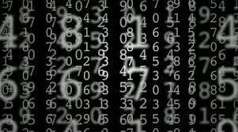

This problem is a Mooshak version of a UVA Online Judge Problem.

A problem that is simple to solve in one dimension is often much more difficult to solve in more than one dimension. Consider satisfying a boolean expression in conjunctive normal form in which each conjunct consists of exactly 3 disjuncts. This problem (3-SAT) is NP-complete. The problem 2-SAT is solved quite efficiently, however. In contrast, some problems belong to the same complexity class regardless of the dimensionality of the problem.Given a 2-dimensional array of positive and negative integers, find the sub-rectangle with the largest sum. The sum of a rectangle is the sum of all the elements in that rectangle. In this problem the sub- rectangle with the largest sum is referred to as the maximal sub-rectangle.
A sub-rectangle is any contiguous sub-array of size 1 × 1 or greater located within the whole array. As an example, the maximal sub-rectangle of the array:
0 −2 −7 0 9 2 −6 2 −4 1 −4 1 −1 8 0 −2
is in the lower-left-hand corner:
9 2 −4 1 −1 8
and has the sum of 15.
The input consists of an \(N \times N\) array of integers.
The input begins with a single positive integer \(N\) on a line by itself indicating the size of the square two dimensional array. This is followed by \(N\) lines describing the matrix, each with \(N\) integers \(x_{ij}\) with the contents of each cell.
The output is the sum of the maximal sub-rectangle.
| Example Input | Example Output |
|---|---|
4 0 -2 -7 0 9 2 -6 2 -4 1 -4 1 -1 8 0 -2 | 15 |
Content by Pedro Ribeiro (DCC/FCUP), migrated from www.dcc.fc.up.pt/~pribeiro/aulas/pc2627/problems/pc021.html to demonstrate the UC Design Kit.